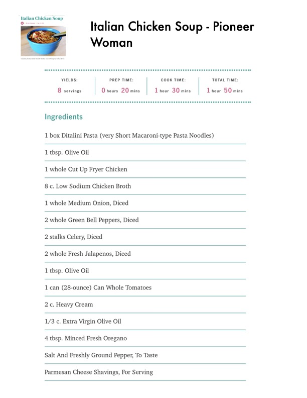

Italian Chicken Soup - Pioneer

Original cookbook page 115
Ingredients
- 8 servings 0 hours 20 mins 1 hour 30 mins 1 hour 50 mins
- 1 box Ditalini Pasta (very Short Macaroni-type Pasta Noodles)
- 1 tbsp. Olive Oil
- 1 whole Cut Up Fryer Chicken
- 8 c. Low Sodium Chicken Broth
- 1 whole Medium Onion, Diced
- 2 whole Green Bell Peppers, Diced
- 2 stalks Celery, Diced
- 2 whole Fresh Jalapenos, Diced
- 1 can (28-ounce) Can Whole Tomatoes
- 2c. Heavy Cream
- 1/3 c. Extra Virgin Olive Oil
- 4 tbsp. Minced Fresh Oregano
- Salt And Freshly Ground Pepper, To Taste
- Parmesan Cheese Shavings, For Serving
Instructions
- Woman YIELDS: PREP TIME: COOK TIME: TOTAL TIME: 8 servings 0 hours 20 mins 1 hour 30 mins 1 hour 50 mins Ingredients
Recipe #115 from collection